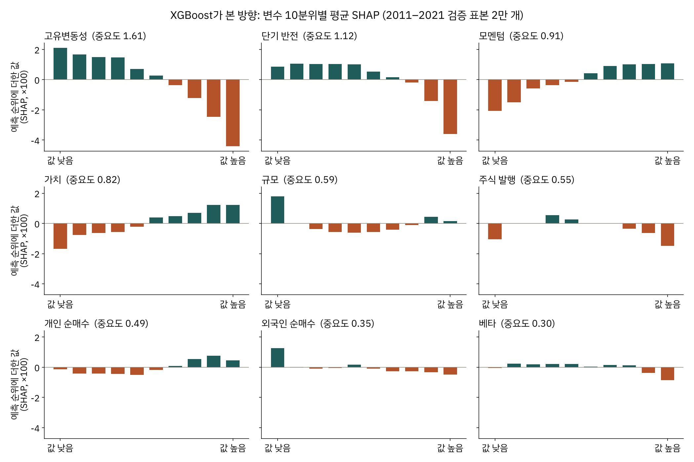
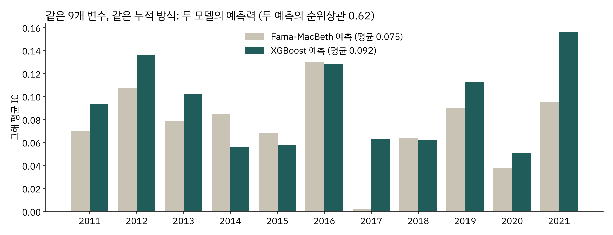
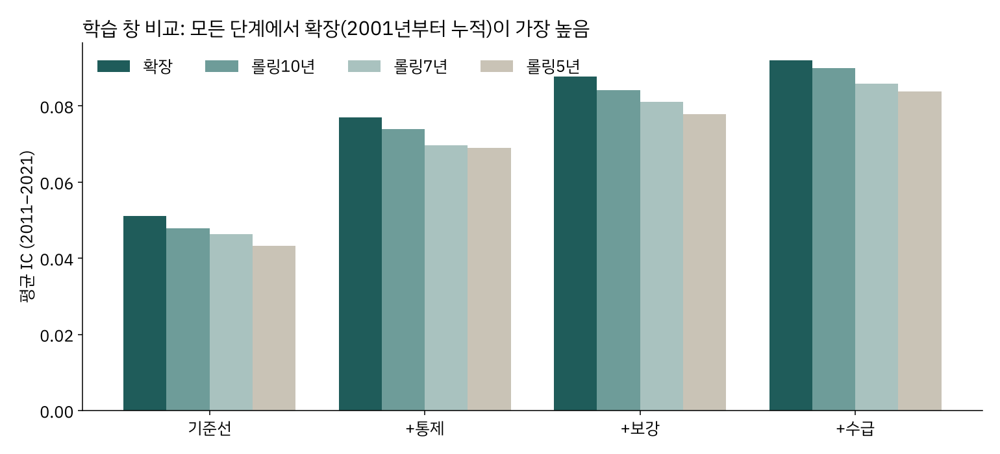
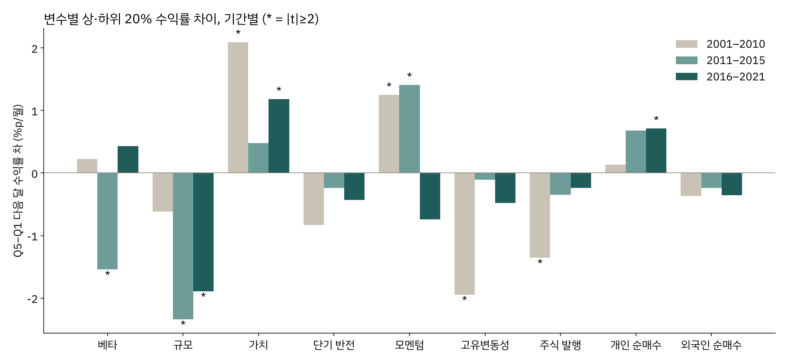
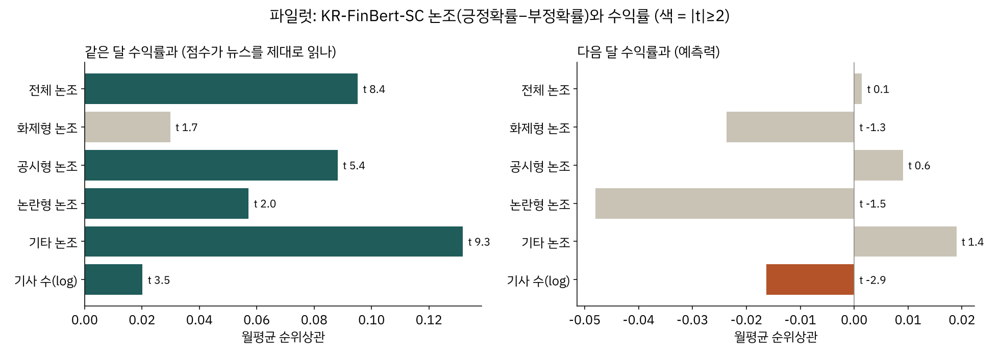

작성: 영섭 (분석 실행은 Claude Code로 함). 모든 코드는 연습장/ 아래에만 있고, 팀 원본 코드(Quant/src)는 건드리지 않았다. 기사 원문은 깃에 올리지 않았고, 원문이 없는 집계표와 그림만 올렸다.
| 작업 | 왜 했나 | 파일 |
|---|---|---|
| 06 설명 단계: SHAP | 교수님 F11 "트리는 +/−를 모르지만 SHAP을 찍으면 얼추 보인다". XGBoost가 FM과 같은 방향으로 학습했는지 확인. | step12_explain.py → shap_vs_fm.csv, figK |
| 06: FM 예측 vs XGBoost 예측 | 이안 제안 "파마맥베스가 예상하는 수치랑 XGBoost가 예상하는 수치 차이". 같은 변수·같은 누적 방식으로 공정하게 비교. | step12_explain.py → fm_vs_xgb_*.csv, figL |
| 학습 기간: 확장 vs 롤링 | 교수님 F9 "반대쪽에서 당길 필요는 없나". 오래된 해가 방해가 되는지 확인(창 고르기가 아니라 점검). | step13_rolling.py → rolling_vs_expanding.csv, figN |
| 기간별 5분위 | 교수님 F2 "연도별로 나눠서 또 다를 수도". 9개 변수 그림을 2001–10/2011–15/2016–21로. | step14_period_quint.py → quint_by_period.csv, figM |
| 뉴스 파일럿 1 (만들기) | 이안 제안 "긍정확률−부정확률이 얼마나 유의미한지 파일럿", 교수님 "기간을 길게 잡아서". 정리본(686MB)은 내 환경으로 못 가져와서, 같은 원자료 중 작은 파일 52개(2001–2021)로 처음부터 같은 절차를 적용. | news/pilot_build.py → pilot_news_monthly.csv |
| 뉴스 파일럿 2 (분석) | 교수님 F3 "뉴스도 먼저 찍어 보라". 같은 달·다음 달 상관, 3분위, FM, H4. | news/pilot_analyze.py → pilot_ic.csv 외, figP |
| 뉴스 파일럿 3 (더 쪼개기) | "같은 달엔 맞고 다음 달엔 안 맞는" 이유를 확인. 주가 보도 기사 제외, 월말 기사, 평소 대비 변화, 비율형. | news/pilot_extra.py → pilot_extra_ic.csv |
방법: 수급까지 넣은 마지막 모델(학습 2001-01~2020-11)로 2011–2021 검증 표본 2만 개의 SHAP 값을 계산. 방향 = 변수 순위와 SHAP 값의 상관.
| 변수 | 중요도 순위 | SHAP 방향 | FM 계수(%p) | FM t | 일치 |
|---|---|---|---|---|---|
| 고유변동성 | 1 | −0.91 | −0.74 | −1.99 | 같음 |
| 단기 반전 | 2 | −0.74 | −0.15 | −0.39 | 같음 |
| 모멘텀 | 3 | +0.89 | +1.01 | 2.47 | 같음 |
| 가치 | 4 | +0.89 | +0.14 | 0.39 | 같음 |
| 규모 | 5 | −0.20 | −2.56 | −6.06 | 같음 |
| 주식 발행 | 6 | −0.60 | −0.52 | −1.76 | 같음 |
| 개인 순매수 | 7 | +0.56 | +0.76 | 3.14 | 같음 |
| 외국인 순매수 | 8 | −0.62 | −0.23 | −1.17 | 같음 |
| 베타 | 9 | −0.48 | −0.24 | −0.79 | 같음 |
읽는 법: 규모는 FM에서 가장 강한데(t −6) SHAP 방향 상관은 −0.20으로 약하다. 그림을 보면 규모는 '가장 작은 10%'에서만 크게 올리고 나머지는 거의 평평하다. 즉 소형주 끝단에만 효과가 몰린 비선형 모양이라 직선 상관이 작게 나온 것이다. 이렇게 모양을 보여 주는 게 SHAP을 쓰는 이유다.

방법: 매년 1월에 '그때까지의 월별 FM 계수 평균'으로 그해 12개월을 예측(XGBoost와 같은 누적 방식, 미래 정보 없음).
| 항목 | Fama-MacBeth 예측 | XGBoost 예측 |
|---|---|---|
| 평균 IC (2011–2021, 131개월) | 0.0749 (t 9.4) | 0.0920 (t 10.3) |
| 차이 (XGB − FM) | +0.0172, t 2.15 · XGBoost가 이긴 해 7/11 | |
| 두 예측의 종목 순위 상관 | 0.62 | |
해석: 직선(FM)만으로도 IC의 80%가 나온다. XGBoost가 더한 0.017은 위의 '소형주 끝단' 같은 비선형 모양 덕분으로 보인다. 발표에서는 "변수 선택 판정은 둘 다로, 예측은 XGBoost가 조금 더 낫다"로 정리하면 된다.

| 평균 IC | 기준선 | +통제 | +보강 | +수급 | 확장보다 나은 해 (수급 단계) |
|---|---|---|---|---|---|
| 확장 (2001~) | 0.0511 | 0.0769 | 0.0878 | 0.0920 | — |
| 롤링 10년 | 0.0478 | 0.0739 | 0.0842 | 0.0899 | 3/11 |
| 롤링 7년 | 0.0463 | 0.0697 | 0.0811 | 0.0859 | 4/11 |
| 롤링 5년 | 0.0433 | 0.0689 | 0.0779 | 0.0838 | 5/11 |
결론: 창을 줄일수록 단계와 상관없이 IC가 낮아진다. 오래된 데이터가 방해가 되지 않고 오히려 도움이 된다. 지금 방식(확장)을 유지하고, 발표에서는 "확인해 봤다"는 근거로 이 표 하나를 보여 준다. 단계별 판정(어떤 변수가 IC를 올리나)도 모든 창에서 같은 순서로 나와 판정이 학습 기간에 흔들리지 않는다.

| 변수 | 2001–2010 | 2011–2015 | 2016–2021 | 한 줄 |
|---|---|---|---|---|
| 베타 | +0.22 | −1.54 (t −3.0) | +0.43 | 2011–15에만 − |
| 규모 | −0.62 | −2.34 (t −4.2) | −1.89 (t −4.1) | 최근에 강해진 소형주 효과 |
| 가치 | +2.09 (t 5.1) | +0.48 | +1.18 (t 2.3) | 꾸준히 +, 2011–15에 약함 |
| 단기 반전 | −0.83 (t −2.0) | −0.24 | −0.43 | 약해짐 |
| 모멘텀 | +1.25 (t 2.3) | +1.41 (t 2.1) | −0.74 (t −1.7) | 2016년 이후 뒤집힘 주의 |
| 고유변동성 | −1.95 (t −3.7) | −0.11 | −0.48 | 2010년 이전 효과 |
| 주식 발행 | −1.36 (t −5.0) | −0.35 | −0.24 | 2010년 이전 효과 |
| 개인 순매수 | +0.13 | +0.68 (t 1.9) | +0.71 (t 2.5) | H1 반대(+)는 최근 현상 |
| 외국인 순매수 | −0.37 | −0.24 | −0.36 | H2 반대(−), 어느 기간도 유의하지 않음 |
왜 중요한가: 확장 학습이 롤링보다 나은 이유와도 이어진다. 효과가 시기마다 켜졌다 꺼지니 여러 시기를 다 본 모델이 덜 흔들린다. 또 모멘텀이 2016년 이후 반대로 돈 것은 발표에서 질문이 나올 수 있으니 미리 알아 둘 것.

| 단계 | 건수 | 왜 이렇게 했나 |
|---|---|---|
| 원자료 52개 파일 읽기 | 322,152 | 정리본 686MB는 드라이브 도구 한도(10MB) 때문에 못 가져옴 → 10MB 미만 원자료 파일만(담당 1~4, 2001–2021 고르게) |
| 빅카인즈 '분석제외(중복·예외)' 빼기 | 298,016 | 빅카인즈가 이미 중복으로 표시한 기사 |
| 언론사 5곳 (매경·머투·서경·파뉴·한경) | 298,016 | 수집 단계에서 이미 5곳만 받음 (확인용) |
| 뉴스 식별자 중복 빼기 | 274,575 | 같은 기사가 여러 검색어 파일에 들어감 |
| 제목·언론사·날짜 같은 기사 빼기 | 270,724 | 식별자만 다른 재송고 |
| 제목에 회사 이름 있는 기사 | 104,093 | 본문에만 잠깐 나온 회사는 그 회사 기사가 아님 → 제목 기준 (38%만 남음) |
| └ (기사, 회사) 짝 | 119,470 / 438종목 | 한 기사 제목에 두 회사가 나오면 둘 다에 붙임 |
| 광고 빼고 감성 점수 | 93,430 | KR-FinBert-SC, 재학습 없음, 제목+본문 앞 200자, CPU 94분 |
| 회사×월 칸 | 16,932 | 마지막 거래일 당일·이후 기사는 다음 달로 (미래 정보 막기) |
같은 이름을 두 종목이 쓰는 경우(삼성물산·SK·미래에셋증권·한국타이어·오리온 등)를 예전에는 통째로 버렸다. 이번에는 ① 합병·분할 날짜로 '이 이름은 언제부터 언제까지 어느 종목'을 정한 수동 규칙 16개, ② 그 외에는 실제로 상장돼 거래되던 기간으로 주인을 정했다. 결과: 7,873건을 살렸고, 그래도 주인을 못 정한 831건만 버렸다.
news/pilot_build.py의 OVERRIDE. 본 데이터에서도 이 방식을 그대로 쓰자고 제안함.| 기타 | 화제형 | 공시형 | 광고 | 논란형 |
|---|---|---|---|---|
| 33.7% | 25.8% | 24.4% | 10.2% | 5.8% |
평균 점수: 화제형 +0.39, 공시형 +0.32, 기타 +0.17, 논란형 −0.46. 점수는 −1이나 +1 근처에 몰려 있다(중간값 0.003). 사람 정답(예원·아영 100건)이 아직 없어 정확도는 모른다. 받으면 agreement()로 바로 잰다.
가장 부정 30건은 '영업익 반토막', '실적 악화 우려로 하락', '조사 착수로 급락' 같은 기사였고, 가장 긍정 30건은 '목표가 상향', '수출 계약', '실적 개선 기대' 같은 기사였다. 방향은 맞다. (원문 목록은 깃 밖 data/news_pilot_work/에만 있음)
표본: 파일럿에서 기사가 1건 이상 있는 (종목, 연도) 안의 모든 종목-월 45,241개(434종목, 251개월). IC = 매월 횡단면 순위상관의 평균.

| 변수 | 같은 달 IC (t) | 다음 달 IC (t) | 칸 수 |
|---|---|---|---|
| 전체 논조 | 0.095 (8.4) | 0.001 (0.1) | 14,680 |
| 화제형 논조 (H3 정의) | 0.030 (1.7) | −0.024 (−1.3) | 5,857 |
| 공시형 논조 | 0.088 (5.4) | 0.009 (0.6) | 7,907 |
| 논란형 논조 | 0.057 (2.0) | −0.048 (−1.5) | 2,342 |
| 기타 논조 | 0.132 (9.3) | 0.019 (1.4) | 9,378 |
| 기사 수 (log) | 0.020 (3.5) | −0.016 (−2.9) | 45,241 |
논조 3분위로 보면 같은 달엔 상−하 +2.69%p/월 (t 6.9), 다음 달엔 −0.09%p (t −0.3). 9개 통제를 넣은 FM에서도 논조 계수는 0 근처(t −0.8)다.
| 확인 | 같은 달 IC (t) | 다음 달 IC (t) | 뜻 |
|---|---|---|---|
| A. 주가 보도 기사(특징주·급등락 등, 14%) 빼기 | 0.059 (5.0) | −0.011 (−1.0) | '주가가 기사를 만든' 몫을 빼도 같은 달 상관이 남음 → 점수가 진짜 소식을 읽음 |
| A'. 주가 보도 기사만 | 0.235 (11.5) | 0.027 (1.4) | 당연히 같은 달과 강하게 연결 |
| B. 월말 2주 기사만 | 0.092 (7.1) | 0.020 (1.5) | 늦은 소식이 다음 달로 조금 이어지는 기미, 유의하지 않음 |
| C. 평소 대비 논조 변화 | 0.088 (8.0) | −0.002 (−0.2) | 변화로 바꿔도 같음 |
| D. 강한 부정 비율 / 강한 긍정 비율 | −0.066 / 0.072 | 0.003 / 0.002 | 평균 대신 비율로 해도 같음 |
| E. 화제형 비율 | −0.039 (−3.7) | 0.006 (0.6) | — |
해석: 상위 대형주의 뉴스는 나온 그달 안에 주가에 반영이 끝난다. 그래서 감성 점수는 '좋은 측정기'지만 '예측 변수'로는 약하다. 화제형 논조가 특히 약한 이유는 화제형 기사(신제품·수주·진출)가 거의 다 긍정이라 종목끼리 점수 차이가 안 나기 때문이다.
| 항목 (다음 달 수익률, 개인 많음 − 적음) | 평균 %p | t |
|---|---|---|
| 호재 종목 안에서 | +0.03 | 0.1 |
| 기사 없는 종목 안에서 | +0.25 | 1.2 |
| 악재 종목 안에서 | +0.46 | 1.4 |
| DiD (호재 − 기사 없음) | −0.22 | −0.6 |
| DiD (호재 − 악재) | −0.43 | −1.1 |
방향은 H4와 같다(호재일 때 개인이 많이 산 종목이 상대적으로 더 약함). 하지만 유의하지 않다. 호재 칸이 달마다 몇 개 안 되는 파일럿이라 본 데이터에서 다시 봐야 한다.
first_month / last_month 칸을 추가한다.| # | 내용 | 누구 |
|---|---|---|
| 1 | 아영 정리본 articles_clean_100.csv(686MB)는 내가 못 가져온다. Colab 노트북(영섭_분류시험_감성점수.ipynb)으로 돌리거나, 압축해서 10MB 이하로 쪼개 주면 같은 분석을 바로 돌릴 수 있다. | 영섭/아영 |
| 2 | 예원·아영 분류시험 100건 정답이 드라이브에 아직 없다. 받으면 일치율·화제형 정밀도를 잰다. | 예원·아영 |
| 3 | 이름 겹침 수동 규칙 날짜 16개를 공시로 확인(합병·분할일). | 영섭 (30분) |
| 4 | 이안 매크로 642개 파일은 이름이 목록과 달라 '종목코드'로 짝을 맞춰야 한다. 파일 이름 규칙을 알려 주면 짝 맞추는 코드를 붙인다. | 이안 |
| 5 | 현대모비스·현대제철·LG이노텍·한국금융지주처럼 받았는데 0건인 회사는 정리 단계에서 빠진 것 같다. 아영님 정리 코드에서 회사명 칸 확인. | 아영 |
| 6 | 월요일 박준호 교수님 면담 때: "뉴스가 그달에 반영이 끝나는 결과를 어떻게 해석·발표할지", "기사 수(관심) 효과를 H3 대신 볼지" 여쭤 보기. | 영섭 |
코드: 연습장/step12_explain.py, step13_rolling.py, step14_period_quint.py, news/pilot_build.py, news/pilot_analyze.py, news/pilot_extra.py
결과: 연습장/out/shap_vs_fm.csv, fm_vs_xgb_pred.csv, fm_vs_xgb_by_year.csv, rolling_vs_expanding.csv, rolling_ic_monthly.csv, quint_by_period.csv, figK·L·M·N, out/news_pilot/(pilot_news_monthly.csv, pilot_coverage.csv, pilot_ic.csv, pilot_extra_ic.csv, pilot_tercile.csv, pilot_fm.csv, pilot_h4.csv, pilot_build_log.json, figP)
원문 포함(깃에 없음): /home/user/data/news_pilot/ (원자료), /home/user/data/news_pilot_work/ (점수 붙은 기사, 긍정·부정 상위 30)